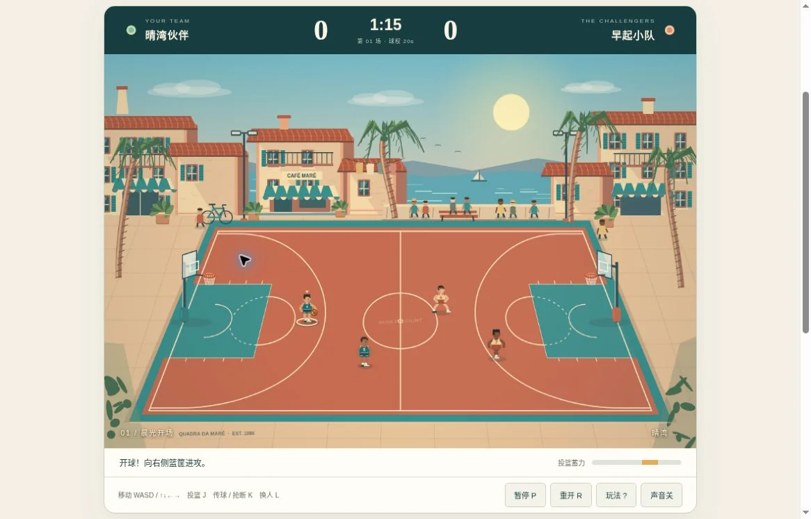
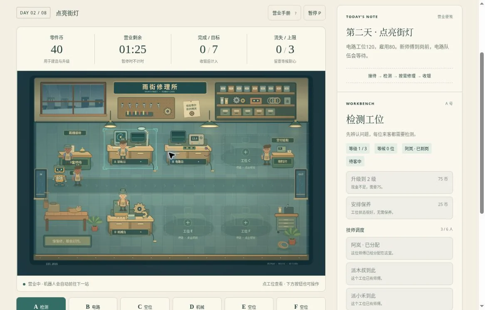
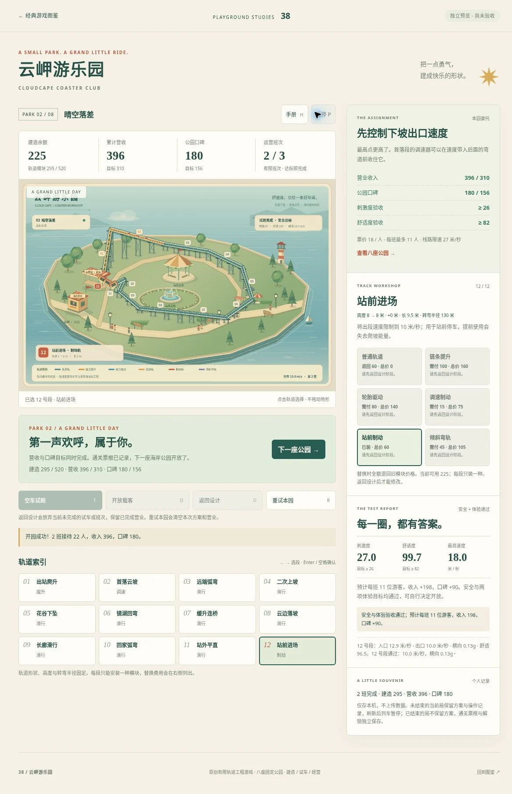
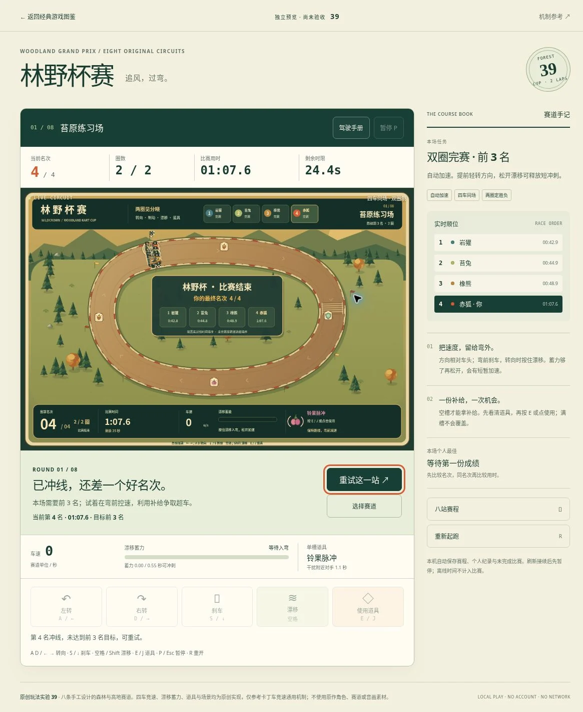

PREVIEW REVIEW / 2026.10.18
把进展，
说得准确一点。
四款候选的阶段验收记录。通过了什么、还缺什么，以及证据对应哪一版代码。
← 返回原型版本入口四款均为独立预览，未计入已发布 34 款。本归档只陈述下列实测范围，不构成八关全部通过、真实手机通过或美术验收。
环境：桌面 Chromium，真实键盘与鼠标操作。400 CSS px 来自桌面窗口缩窄与正常浏览器缩放。截图仅转码压缩，保持原尺寸和完整内容；点击可查看全图。
代码快照基准：86bb326。各游戏的实测对应提交单列于下方。截图可能早于后续布局修复，具体阶段见图注。
首场闭环已验证
实测时段：2026-10-18 12:00–12:30 UTC
实际通过范围
- 首场自然结束，8:6 获胜；第二场解锁，刷新保留最佳分差 +2。
- 宽屏与桌面 400 CSS px 布局回归通过；投篮按钮失焦取消通过。
- 实测移动、传球、换人、蓄力投篮、暂停与帮助。比赛中打开帮助会暂停，关闭后继续。
- 当前比赛不存档；刷新回准备状态，解锁与最佳分差独立保留，符合页面说明。
- 宽屏 1181×757 CSS px，HUD、完整球场、蓄力条和工具栏同屏。桌面 400×606 CSS px 无横向溢出，方向与动作按钮可见。
- 真实投篮按钮持按期间失焦后蓄力归零，后续松键未误投。
待验证与已知限制
- 第 2–8 场完整比赛、加时、失败重试、pointercancel 与多指触控尚未实玩。
真实手机、移动浏览器、多指触控和人工美术验收未完成。各款共 8 关不表示已实玩全部关卡。
对应代码


查看完整截图 ↗
前两日闭环与布局回归通过
实测时段：2026-10-18 12:31–12:44 UTC
实际通过范围
- 首日 8 单 / 311 币，次日 10 单 / 356 币，均 0 流失；刷新保留前两日最佳与第三日解锁。
- 桌面 400 / 500 CSS px 无横向溢出；第二天建站、雇用、派工后刷新保留。
- 首日通过实际经营自然结算，完成 8 单，高于目标 6 单；未通过改写状态或存档取得结果。
- 第二天建设电路工位花费 120 币，雇用花费 80 币，并用 Enter 派出小禾；余额 240→40，刷新后保留。
- 第二日自然结算 10 单、0 流失、356 币；刷新后前两日最佳记录及第三日解锁保留。第三日只进入准备态检查布局，未营业。
- 500 CSS px 视宽的 clientWidth 与 scrollWidth 均为 485；400 CSS px 均为 388。窄屏暂停画布 364×390，运行画布 364×263.76，未再撑宽。
- ready、paused、playing 三态在桌面 400 / 500 CSS px 均无横向溢出。桌面 400 CSS px 下 HUD、画布及工位按钮同屏；宽屏 HUD 与完整画布可见，底部工位按钮需要约 13 px 微滚。宽屏点击 B、窄屏点击 F 工位均命中。
待验证与已知限制
- 宽屏底部工位按钮仍需约 13 px 微滚；第 3–8 天完整经营、失败分支与真实触屏仍待验。
真实手机、移动浏览器、多指触控和人工美术验收未完成。各款共 8 关不表示已实玩全部关卡。
对应代码


查看完整截图 ↗
前两园闭环已验证
实测时段：2026-10-18 11:19–11:35 UTC
实际通过范围
- 前两园均真实完成设计、试车、载客与通关；第二园营收 396、口碑 180。
- 结束局刷新进入最新解锁园；活动方案、认证与暂停恢复已复验。
- 首园裸轨试车失速后，依据诊断安装链条提升与站前制动。修正后安全和体验通过，再手动开放载客。
- 首园 2 班、20 位游客，营收 320、口碑 180；第二园 2 班、22 位游客，营收 396、口碑 180。
- 第二园未结束设计在修复后仍优先恢复；载客中刷新保留方案与认证，并以暂停状态等待继续。
- 第二园通关后直接刷新，进入最新解锁第三园；前两园票根保留，第 4–8 园保持锁定。
- 宽屏、500 CSS px 及桌面 400 CSS px 检查无横向溢出；轨道选择、键盘索引、章节对话框与模块操作可用。
待验证与已知限制
- 第 3–8 园完整经营、全部边界条件和真实手机未验；窄屏配置操作仍需上下滚动。
真实手机、移动浏览器、多指触控和人工美术验收未完成。各款共 8 关不表示已实玩全部关卡。
对应代码


查看完整截图 ↗
双圈完赛；胜利解锁待验
实测时段：2026-10-18 11:27–11:57 UTC
实际通过范围
- 首站双圈 67.6 秒、第 4 名，正确判为未达标；其余七站仍锁定。
- 超时失败、重试、道具拾取与使用入口、暂停恢复和宽窄布局已验证。
- 自动加速、真实键盘转向与刹车、首次教程、倒计时、手册与暂停已实测。当前比赛刷新后暂停恢复，不计入离线时间。
- 曾在 92 秒超时后正确失败；重试回倒计时 3、00:00.0、1/2 圈、92 秒，未错误解锁。
- 另一次真实驾驶于 67.6 秒完成两圈，第 4 名；目标为前 3 名，页面正确给出名次未达标结算，剩余 24.4 秒。
- 实际拾取护盾、冲刺和脉冲；使用护盾后槽清空且护盾圈可见，使用冲刺后槽清空。未量化护盾防撞、冲刺峰值或脉冲命中。
- 开始、继续与重试的赛道滚动定位经过宽屏和桌面 400 CSS px 回归。远程输入存在间歇延迟，不能据此判定转向或游戏难度有缺陷；胜利路径仍需低延迟直接键盘操作复验。
待验证与已知限制
- 真实胜利→解锁→刷新保留尚待人工驾驶验证；成功漂移、全道具效果及第 2–8 站仍待验。
真实手机、移动浏览器、多指触控和人工美术验收未完成。各款共 8 关不表示已实玩全部关卡。
对应代码


查看完整截图 ↗
可核对的归档
归档说明 · 结构化状态 · 截图来源与 SHA-256
程序模型与自动化测试不替代本页的真实游玩记录；本归档没有将测试模拟结果计入实玩通关数。页面的 noindex 是搜索引擎提示，不是访问限制。